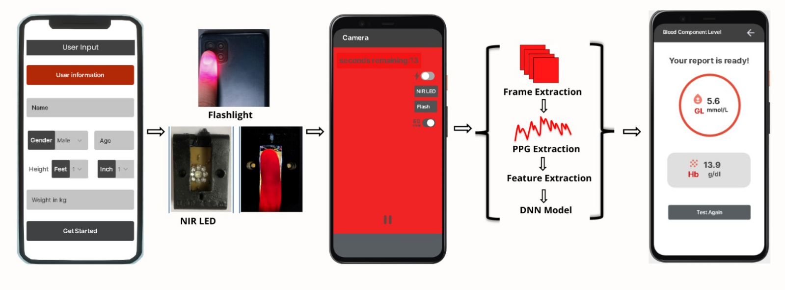
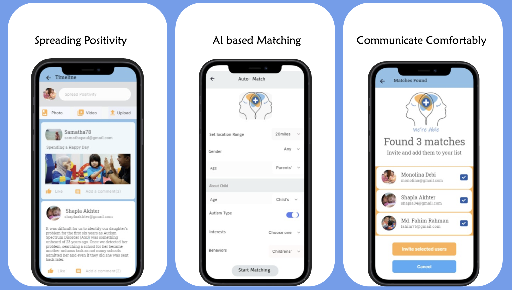

Humaira Anzum Neha
I am a Lecturer in the Department of Computer Science and Engineering at United International University and an M.Sc. student at BRAC University. My research interests lie at the intersection of human-centered AI, multimodal AI, computer vision, natural language processing, human–computer interaction, and accessibility.
My research experience highlights my interest in both developing intelligent systems and understanding the people they are designed to serve. My previous work has focused on assistive technology and digital health. Currently, I am conducting a qualitative HCI study with people who stutter and exploring a model-agnostic visual prompting approach for training-free long-video understanding.
I am seeking PhD opportunities for Fall 2027 with a focus on human-centered AI. I aim to combine computer vision, NLP, and HCI to develop intelligent systems that respond to real-world needs, reduce everyday burdens, and remain accessible across diverse abilities, backgrounds, and contexts.
Ongoing work
Current research in human–computer interaction and computer vision.
Qualitative HCI research with people who stutter
Conducting a qualitative HCI study with people who stutter to understand their experiences, perspectives, and needs in relation to technology.
Model-agnostic visual prompting for training-free long-video understanding
Exploring a model-agnostic visual prompting approach that organizes selected video frames into visual prompts for long-video question answering, without task-specific training or changes to the underlying model.
Publications
Peer-reviewed conference papers spanning digital health and assistive computer vision.
Automated Object Identification for the Visually Impaired
Humaira Anzum Neha, Muhammad Sheikh Sadi, Md. Repon Islam, and Sadman Sakib.
An Assistive Device for the Visually Impaired for Enhanced Navigation and Reading
Sadman Sakib, Muhammad Sheikh Sadi, Md. Shanjid Arefin, Md. Repon Islam, and Humaira Anzum Neha.
Mobile Application to Collect Data and Measure Blood Component Level in a Non-Invasive Way
Humaira Anzum Neha, Sadman Sakib, Farhan Sadaf, and S. M. Taslim Uddin Raju.
Datasets & research resources
Curated resources developed to support reproducible research and downstream learning tasks.
MusicCaps-Curated-Tags
A derivative annotation dataset built on MusicCaps, adding a standardized multi-label vocabulary of 216 tags across five categories: genre, instrument, mood, vocal, and tempo.
Assistive Object Detection Dataset
Approximately 21,000 images across eight classes: chair, table, door, stairs, currency, commode, wardrobe, and person. Images are annotated with object-level bounding boxes in YOLO format.
Bangladeshi Currency Classification Dataset
A custom image dataset of Bangladeshi banknotes developed to train and evaluate the currency-denomination classification component of the assistive object-identification system.
Research experience
Selected undergraduate research projects completed at KUET.
Automated object identification for the visually impaired
An edge-deployable system for object detection, Bangladeshi currency and denomination recognition, and face recognition. The project also included the collection and annotation of custom image datasets, including Bangladeshi currency images, for model training and evaluation.
An assistive device for enhanced navigation and reading
Assistive smart glasses that combine real-time obstacle detection, fall alerts, and on-device text recognition to read printed material aloud.
Non-invasive measurement of blood components via a mobile app
A mobile application that records a fingertip video under near-infrared light, extracts a photoplethysmography signal, and uses a neural network to estimate glucose and hemoglobin levels without invasive sampling.

Teaching & mentoring
Selected teaching, thesis supervision, and student mentoring activities.
Academic projects
Selected software and artificial intelligence projects completed through coursework.
Abalone AI
A playable Abalone board game featuring an AI opponent developed with Minimax search and alpha–beta pruning.
Smart&Safe
A marketplace for used smartphones with national identity verification, automated IMEI screening, and an administrative dashboard.
Together
A mobile application that helps teams assign tasks, track responsibilities, and manage shared deadlines.
Coursework
BRAC University — 6 credits completed with a CGPA of 4.00/4.00.
Completed
- Research Methodology and Seminar Done
- Advanced Natural Language Processing Done
This semester
- Neural Networks and Fuzzy Systems Ongoing
- Deep Learning for Computer Vision Ongoing
Key undergrad coursework
Selected coursework supporting my interdisciplinary work across AI, data, language, and vision.
Data & quantitative methods
- Applied Statistics BSc
- Data Mining BSc
AI, language & vision
- Image Processing BSc
- Natural Language Processing BSc
Skills
Education
MSc, Computer Science and Engineering
B.Sc, Computer Science and Engineering
Higher Secondary Certificate
Secondary School Certificate
Achievements
Dean's List Award
— KUETAwarded across multiple semesters for consistent academic performance.
View certificateCGPA rank of 120 students
— KUET, 2018–2022Ranked in the top three of my cohort by cumulative GPA.
UNDP Women's Digital Innovation Hackathon
— 2021Designed and prototyped a community-based application idea to help parents of autistic children connect, share experiences, access support, and address social stigma. The prototype was selected among the hackathon's Top 10 entries.
View certificate